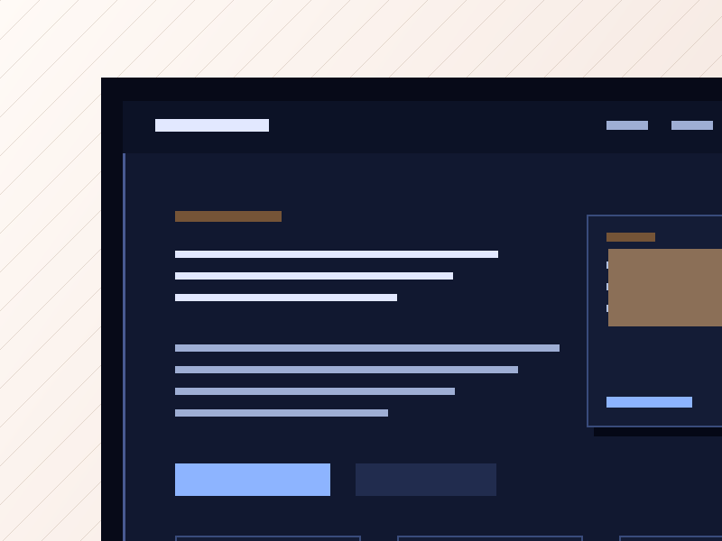
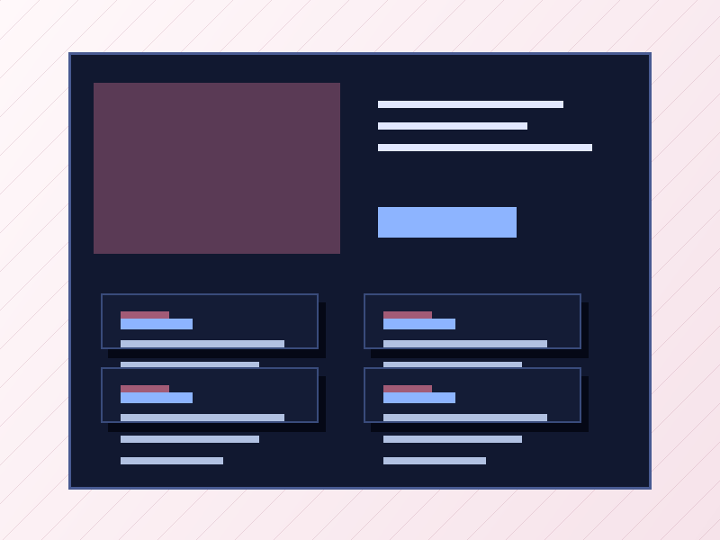
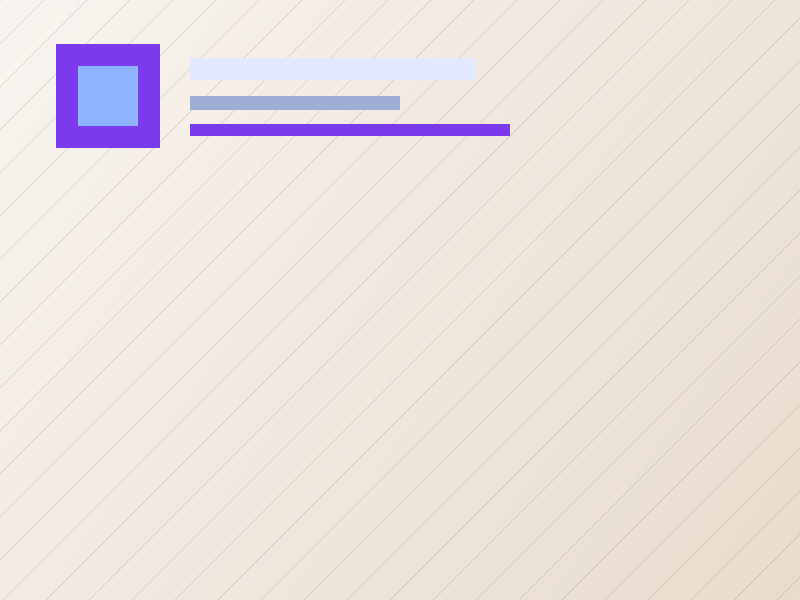

Жіночі стрижки та укладки
Презентація базових форматів стрижок, укладок і доглянутого завершення образу без обіцянок конкретного результату.
Демонстраційний концепт SHYROKO Web Studio
Концепт сучасного сайту студії краси із презентацією послуг, майстрів, підходу та зручним переходом до запису.

Перелік послуг показує можливу структуру сайту студії краси без цін, гарантій ефекту або медичних тверджень.
Презентація базових форматів стрижок, укладок і доглянутого завершення образу без обіцянок конкретного результату.
Опис напрямів фарбування, консультації щодо побажань і підбору візуального рішення перед процедурою.
Інформаційний блок про охайний манікюр, базовий догляд за нігтями та варіанти покриття.
Стислий опис немедичних beauty-послуг для акценту на рисах обличчя та доглянутому вигляді.
Презентація денних, вечірніх і подієвих образів із попереднім узгодженням бажаного стилю.
Опис делікатних доглядових послуг без лікувальних тверджень, медичних обіцянок або гарантій ефекту.
Візуальний блок описує настрій демонстраційного сайту, а не реальний інтер'єр чи адресу салону.
Секція показує, як сайт може передати спокійну атмосферу студії, охайність простору та увагу до деталей.
Контент допомагає пояснити формат консультації, запису і підготовки до візиту без перевантаження сторінки.
Локальні зображення й картки підтримують преміальний настрій без вигаданих фотографій клієнтів або майстрів.
Профілі нижче є умовними ролями для структури сторінки. Вони не містять реальних ПІБ, фотографій людей, кваліфікацій або вигаданого досвіду.

Демо-профіль
Демо-профіль для опису напрямів стрижок, укладок і фарбування без імені, стажу чи персональних тверджень.

Демо-профіль
Приклад структурованого профілю для манікюру та догляду за нігтями без фотографії людини або вигаданої кваліфікації.

Демо-профіль
Демо-картка для макіяжу, брів і вій з акцентом на формат послуг, а не на персональні дані спеціаліста.
Перед послугою студія може узгодити побажання, формат візиту та очікуваний напрям образу.
Сайт пояснює, що рішення обираються після обговорення стилю, стану волосся чи нігтів і практичних потреб клієнта.
Окремий блок допомагає підкреслити чистий процес, акуратність робочого місця і повагу до часу відвідувача.
Поради формулюються як beauty-догляд без медичних тверджень, лікувальних порад або гарантованого ефекту.
Сценарій запису наведено як приклад клієнтського маршруту для майбутнього сайту.
Відвідувач обирає зручний спосіб зв’язку і коротко описує бажану послугу або привід для візиту.
Студія може поставити кілька практичних запитань щодо формату, дати, тривалості та побажань.
Після уточнення запиту підбирається доступний час без автоматичних обіцянок або вигаданого графіка.
Клієнт отримує зрозуміле підтвердження домовленостей і, за потреби, нейтральні рекомендації до візиту.
Остаточний обсяг і вартість визначаємо після короткого обговорення завдання, матеріалів і потрібної структури.
Формат для одного beauty-напряму або короткого візиту.
Індивідуальний розрахунок
Формат для кількох послуг в одному сценарії сторінки.
Індивідуальний розрахунок
Варіант для студії з власною структурою послуг і процесом запису.
Індивідуальний розрахунок
Ні. Це демонстраційний концепт SHYROKO Web Studio для портфоліо, а не сторінка чинного салону краси.
У концепті не використовуються реальні ПІБ, фотографії людей, стаж, кваліфікації або інші персональні дані.
Ціни не вигадуються. Реальний салон може надати власні формати, а сайт відобразить їх після перевірки.
Ні. Контент описує лише немедичні beauty-послуги і не містить лікувальних тверджень або гарантованого ефекту.
Кнопки ведуть до контактного блоку, де власник може вказати фактичний email або телефон.
Контакти належать SHYROKO Web Studio і передаються власником під час створення демонстраційного сайту.
SHYROKO WEB STUDIO
Цей концепт показує, як SHYROKO Web Studio може оформити преміальну сторінку beauty-бізнесу. Контакти SHYROKO Web Studio формуються тільки з фактичного email або телефону власника.